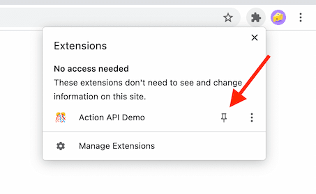

Action API Demo
Before experimenting with these APIs, we recommend you pin the extension's action button to your toolbar in order to make it easier to see the changes.
Popup
This demo's manifest.json file sets the value of
action.default_popup to popups/popup.html. We can change that behavior at runtime using action.setPopup.
Register a handler to change how the action button behaves. Once changed, clicking the action will open your new favorite website.